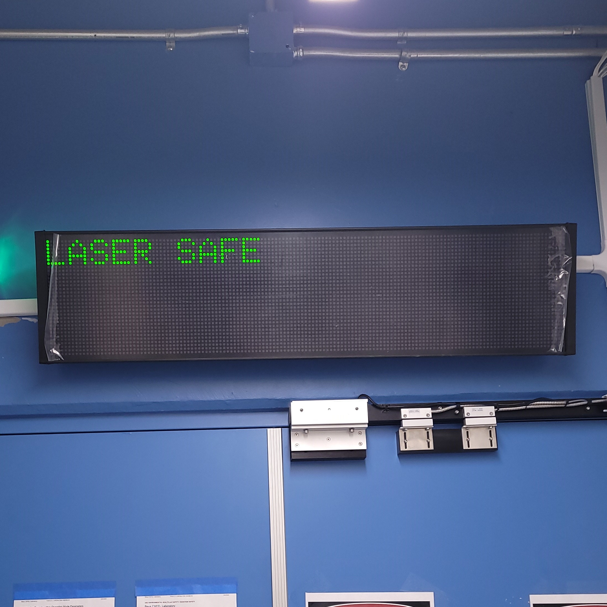
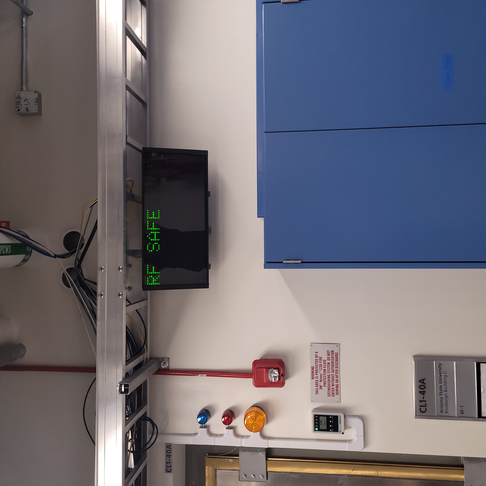
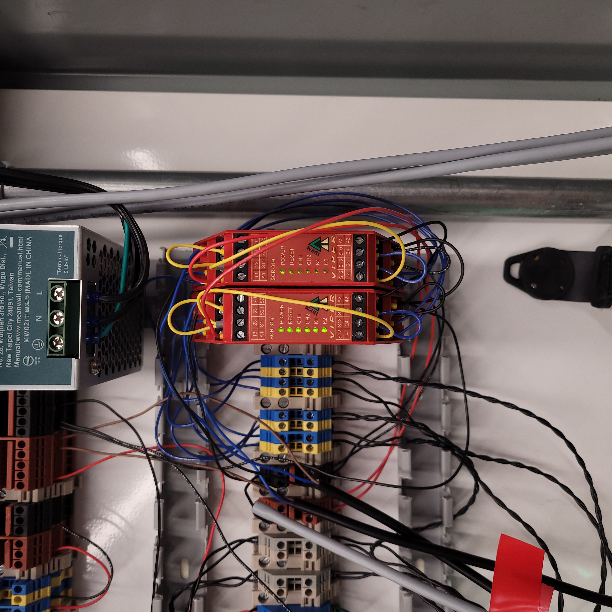
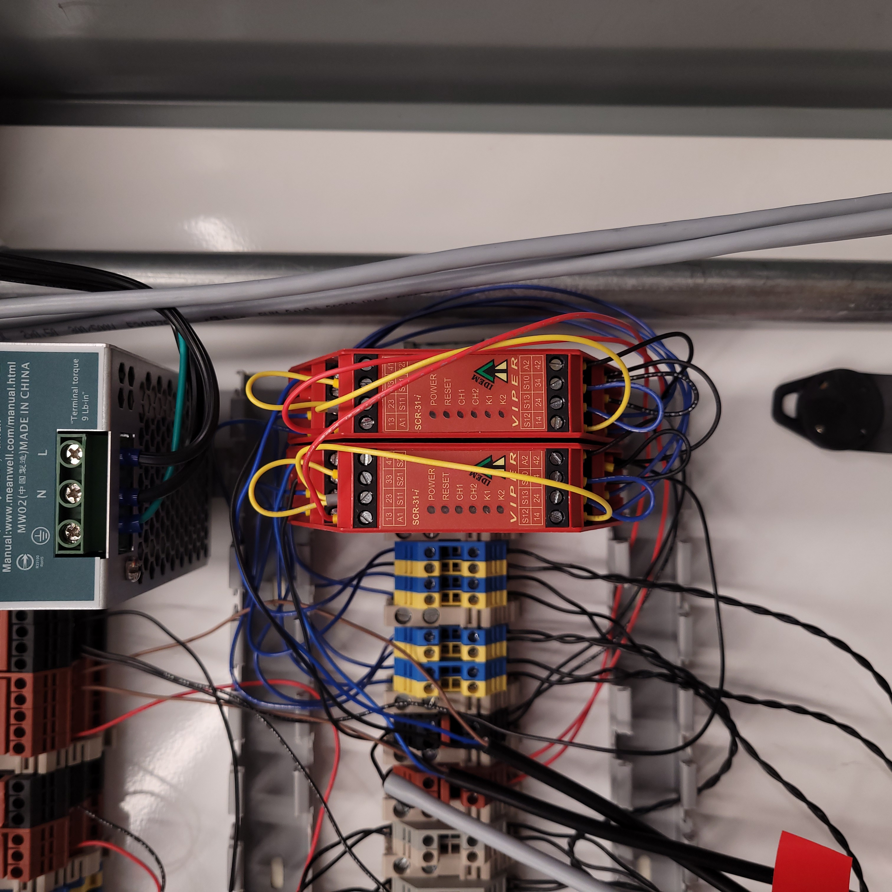
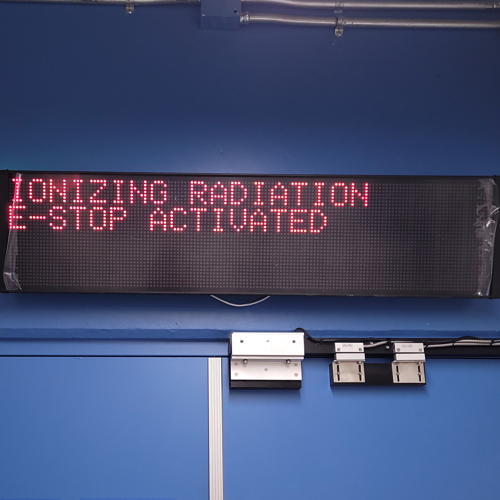
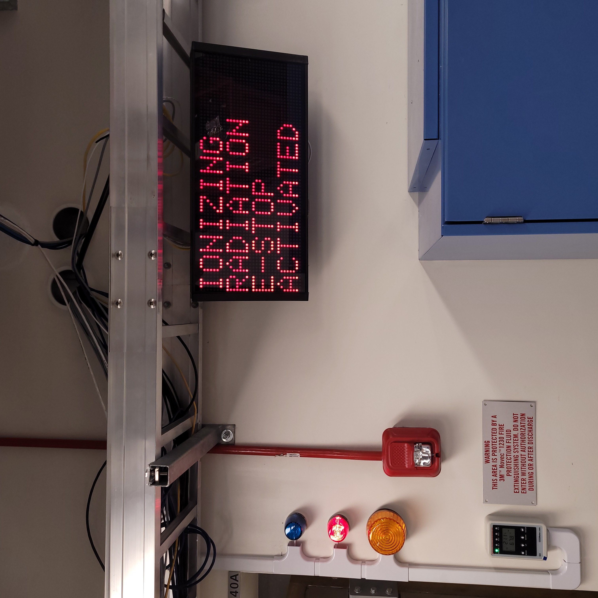

Ionizing Radiation Emergency Stop Testing Protocol
The objective of this testing procedure is to verify the functionality of the ionizing radiation emergency stop button system. This system is used to cut power to the transmitters from a high-power state during an emergency.
Starting Conditions
VIEWMARQ display in Accelerator Lab shows RF SAFE.
VIEWMARQ display in Vault-1 Control shows LASER SAFE.
Check that relay 1-4, and 7 in Vault-1 Control west aggregator panel shows all diagnostic LEDs on.
Relay 1
Relay 2
Relay 3
Relay 4
Relay 7
Check that all relays in RF-1 aggregator panel show all diagnostic LEDs on.
Verify that the Accelerator Lab and Vault-1 Control E-Stop beacons are off.
Vault-1 Control IONIZING RADIATION INTERLOCK protocase beacon.
Vault-1 Control red beacon module.
Accelerator Lab red beacon module.
Hutch-1 Control IONIZING RADIATION INTERLOCK protocase beacon.
Verify that all CXLS ionizing radiation emergency stop buttons are not engaged.
Hutch-1 A
Hutch-1 B
Hutch-1 C
Hutch-1 Control A
Hutch-1 Control B
RF-1 A
RF-1 B
Vault-1 Control A
Vault-1 A
Vault-1 B
Vault-1 C
Vault-1 D
Vault-1 E
Vault-1 F
Vault-1 G

|

|
E-stop button engaged. =============================================================== |
E-stop button disengaged. ============================================================ |
Figure 1: These are examples of the ionizing radiation emergency stop buttons in the facility.
|  |  |
Vault-1 Control VIEWMARQ display when the system is safe. ================================= |
Accelerator Lab VIEWMARQ display when the system is safe. ================================= |
{kind=link}
{kind=link}
Figure 2: These are the VIEWMARQ displays in Vault-1 Control and Accelerator Lab when the system is safe.
|  |  |
Relay on example. ================================================================= |
Relay off example. ================================================================ |
{kind=link}
{kind=link}
Figure 3: These are examples of the relays, in on and off states. If there are only some diagnostic LEDs on, the relay is in a fault state, and must be troubleshooted.
Testing
Push the Vault-1 Control E-stop. In response:
E-stop LED turns on.
IONIZING RADIATION INTERLOCK protocase beacon in Hutch-1 Control and Vault-1 Control turns on.
VIEWMARQ displays in Accelerator Lab and Vault-1 Control shows IONIZING RADIATION E-STOP ACTIVATED.
Individual red beacon modules in Accelerator Lab and Vault-1 Control turn on.
Both relays in the RF aggregator panel turn off.
For all other E-stops, only verify that the E-stop light turns on and that the relays in the RF aggregator panel turn off.
Hutch-1 A
Hutch-1 B
Hutch-1 C
Hutch-1 Control A
Hutch-1 Control B
RF-1 A
RF-1 B
Vault-1 Control A
Vault-1 A
Vault-1 B
Vault-1 C
Vault-1 D
Vault-1 E
Vault-1 F
Vault-1 G
|  |  |
Vault-1 Control VIEWMARQ display when the system is in an e-stop state. ======================= |
Accelerator Lab VIEWMARQ display when the system is in an e-stop state. ======================= |
{kind=link}
{kind=link}
Figure 4: These are the VIEWMARQ displays in Vault-1 Control and Accelerator Lab when an ionizing radiation e-stop is pressed.
Emergency Tungsten Shutter Crash
Secure Hutch-1.
Set the BEAM SELECT to DIVERGENT.
Chose any ionizing radiation e-stop in the facility and press it. In response:
Hutch-1 Control IONIZING RADIATION INTERLOCK protocase lamps for BEAM STATUS turn red.
The DIVERGENT shutter (closest, upside down shutter) is closed.
High Power Transmitter Crash
Every 6 months, the ionizing radiation emergency stop buttons are tested for successfully crashing the transmitters from a high-power state. Verify the last date for the e-stop crash test.
If 6 months have passed, put both transmitters into TRIG and verify it loses power when an e-stop is pressed.